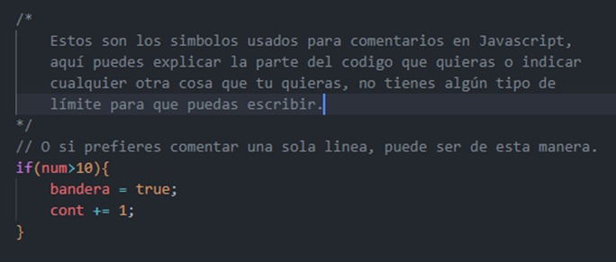
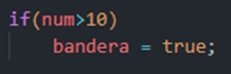
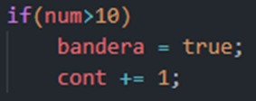
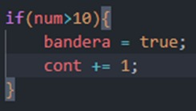
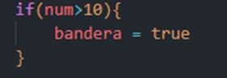
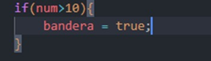
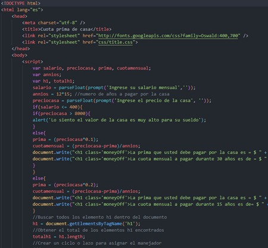

Buenas prácticas
de edición de
Código JS
En el momento que nosotros estamos editando programando o editando nuestro código, lo hacemos de una manera en la que nosotros le entendemos perfectamente y pensamos, “Esta es la manera correcta”.
Siempre encontraremos ciertos tipos de errores, no de parte de le ejecución, sino de como el código es interpretado, por lo que serían malas prácticas al editar código, con el propósito de que el código pueda ser un poco más fácil de entender para todos y no haya problemas al momento de interpretarlo o tener las cosas mejor implementadas.
1
2
Escritura en HTML:
En el caso de hacer JavaScript no invasivo, solo escribir el llamado al archivo JS en HTML, este llamado siempre debemos de colocarlo al final de nuestro documento HTML, justo antes del cierre del cuerpo, esto con el propósito de cargar la página más rápido, cuando se pone al inicio, el navegador tendrá que cargar todo el archivo JS, primero y no podrá continuar con lo demás.
4
Comenta tú codigo:
Puede parecer de lo más innecesario al momento de estar codificando, pero es una parte esencial, para la explicación del código, y más cuando este lo vas a vender, con los comentarios puedes explicar de manera abreviada que es lo que hace cierta parte de este, con tal de facilitar la comprensión para otro programador o para el cliente.
3
Código Resumido:
A veces creemos que resumir el código o usar la versión resumida de una instrucción es la mejor opción, pero la verdad es que no, podemos generar algún problema o la mala ejecución del script, aunque tenemos momento en los que, si es un poco apropiado, por ejemplo:
1) En este caso, podemos omitir las llaves, no habría ninguna clase de problema al ejecutarlo, se interpretaría de la manera correcta.
2) En este caso, si tuviéramos problemas, ya que la variable se ejecutaría siempre, no solamente en el caso que “num” sea mayor a 10, por lo tanto, quitar cosas o abreviar código, puede en ocasiones ser un problema al momento de interpretarlo por la computadora, lo correcto sería utilizar siempre llaves siempre, en este caso, y no utilizar código abreviado, entonces, la manera correcta de escribir el código anterior sería:
3) El único momento que sería oportuno de utilizar este tipo de abreviaciones, es cuando son instrucciones simples (solo una línea).
5
Usa siempre el punto y coma (;):
Puede sonar muy repetitivo, pero esto es algo, que con las instrucciones simples, como la mostrada en el punto tres, se puede omitir, pero esto nunca lo debes de hacer, siempre da fin a todas tus líneas de código, ya que este puede ocasionar problemas al momento de ejecutar tu código.

Mala practica

Buena practica
6
JavaScript no intrusivo:
Este tiene como fundamento, separa la funcionalidad con el contenido de la página, ya que un documento HTML solo es la estructura de la página.
Entonces el JavaScript no intrusivo, es aquel que está totalmente separado de la información o de la estructura de la información de la página, en un inicio se puede ver más complicado, ya que vamos a escribir más líneas de código, por lo contrario, vamos a poder aplicar una serie de buenas practicas a nuestro código del cliente de una manera que a futuro nos va a resultar más fácil de trabajar.

Mala practica